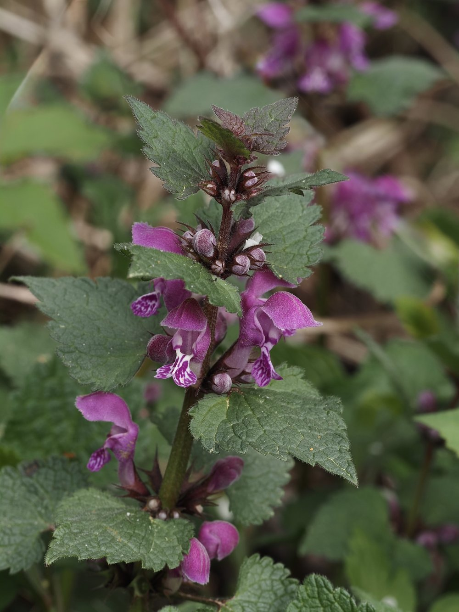

Sie sieht aus wie eine Brennnessel – und brennt kein bisschen.


Die perfekte Brennnessel-Imitation
Die Rote Taubnessel sieht der Brennnessel täuschend ähnlich – herzförmige, gekerbte Blätter, ähnlicher Wuchs. Der entscheidende Unterschied: keine Brennhaare! ‚Taub' bedeutet im Deutschen genau das: ohne Wirkung, blind, stumm. Die Pflanze nutzt die Verteidigungsstrategie ihrer unbeliebten Nachbarin, ohne selbst in die Entwicklung von Brennhaaren investieren zu müssen.
Erste Nektarquelle des Jahres
Die Rote Taubnessel blüht schon ab März – manchmal sogar im Winter bei Tauwetter. Für Hummelköniginnen, die nach dem Winterschlaf Energie für den Kolonieaufbau brauchen, ist sie eine der wichtigsten frühen Nektarquellen. Gärten mit Taubnesseln sind wertvoller für Hummeln als manch teuer angelegtes Wildblumenbeet.
Wissenswertes & Merksätze
Taub = ohne Wirkung
Der Name unterscheidet sie von der Brennnessel – ‚taub' wie in ‚leer, wirkungslos'. Keine Brennhaare, kein Jucken.
Bestimmung
Blatt anfassen – brennt es? Brennnessel. Brennt es nicht? Taubnessel. Der einfachste Bestimmungstest auf der Exkursion.
Lippenblütler
Verwandt mit Salbei, Thymian, Minze und Goldnessel – alle haben die charakteristische zweilippige Blütenform.